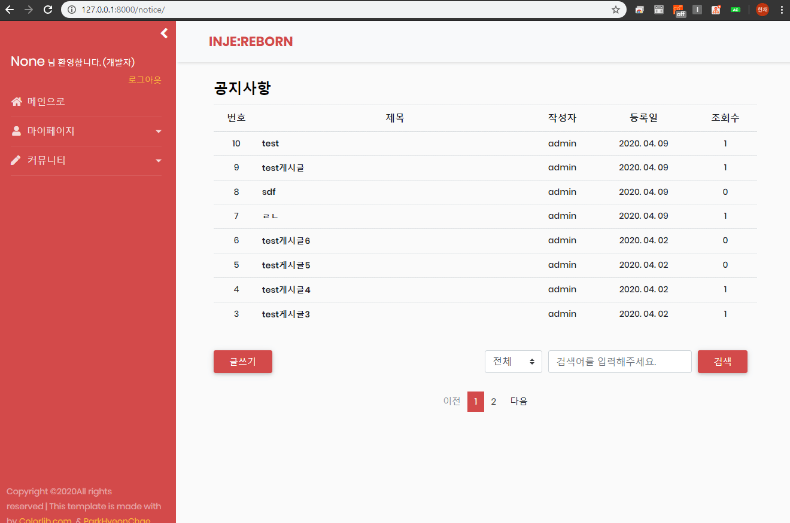

from .models import Notice from users.models import User from django.shortcuts import redirect from .forms import NoticeWriteForm from users.decorators import admin_required
@login_message_required @admin_required def notice_write_view(request): if request.method == "POST": form = NoticeWriteForm(request.POST) user = request.session['user_id'] user_id = User.objects.get(user_id = user)
if form.is_valid(): notice = form.save(commit = False) notice.writer = user_id notice.save() return redirect('notice:notice_list') else: form = NoticeWriteForm()
공지사항 글작성은 관리자권한의 사용자만 글을 작성할 수 있도록 하기 위해 이전에 생성해둔 decorators에서 admin_required를 추가로 import 해줍니다. 그후 앞서 생성한 NoticeWriteForm을 GET으로 뿌려주고, 입력된 폼 값들이 POST로 요청되면 user변수에 접속 사용자의 세션 아이디를 담아 모델의 작성자 필드에 삽입시킵니다.
3. urls.py 작성
생성한 글작성 view를 연결하기 위해 urls.py의 urlpatterns에 아래의 path경로를 추가합니다.
위지위그란 간단히 문서편집을 위한 에디터입니다. 자주 사용되는 Ckeditor, TinyMCE, Redactor 등이 있지만 이 프로젝트의 프론트 디자인은 대부분 부트스트랩이기 때문에 부트스트랩 기반의 위지위그인 Summernote를 사용합니다.
Summernote 설치는 pip install django-summernote 명령어를 통해 간단히 설치할 수 있습니다. 하지만 저는 커스텀을 위해 프로젝트에 직접 파일을 추가하여 적용하였습니다. (포스팅에서는 CDN추가로 진행하겠습니다. Summernote 공식 사이트에 들어가면 for Bootstarp4과 같이 버전별로 CDN을 확인하실 수 있습니다.)
notice_wirte.html의 header부분에 Summernote CDN을 추가하고 한글폰트를 적용하기 위해 summernote사이트에서 font파일을 다운받아 프로젝트에 파일을 추가한 후, 아래와 같이 커스텀을 위한 script를 작성합니다.
Summernote로 작성한 게시글을 불러올시 html 태그가 그대로 적용되어 출력되는것을 방지하기 위해서 notice_detail.html의 content 부분에 django 내장 필터인 safe를 추가합니다.
1 2 3
<!-- templates/notice/notice_detail.html -->
{{ notice.content | safe }}
7. 페이지 벗어나기 경고창 구현
글작성 창에서 새로고침, 뒤로가기 등 사용자가 작성중인 페이지를 벗어날시 경고 alert창을 띄우게 하기 위해 아래의 스크립트를 추가합니다.
1 2 3 4 5 6 7 8 9 10 11 12
<!-- templates/notice/notice_write.html -->
<script type="text/javascript"> var checkUnload = true; $(window).on('beforeunload', function () { if (checkUnload) return "이 페이지를 벗어나면 작성된 내용은 저장되지 않습니다."; }); $("#write").on("click", function () { checkUnload = false; $("submit").submit(); }); </script>
8. 결과

*전체 html, css 등은 자세하게 포스팅하지 않습니다. 제 Github에서 소스를 확인하실 수 있습니다.